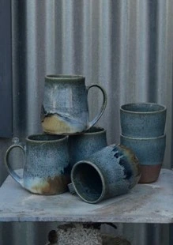

Lydia Latham

Mae Lydia yn cyfuno Kolrosing a dyluniadau cain i ddal delweddau botanegol ar bren.
Gan ddefnyddio dulliau gweithio pren traddodiadol, mae Lydia yn cyflwyno gwaith wedi’i ysbrydoli gan gasgliadau sbesimenau Fictoraidd.
Lydia blends Kolrosing and delicate design to capture botanical images on wood.
Using traditional wood working methods, Lydia presents work that draws inspiration from Victorian specimen collections.
07715 548924
lydia.w.latham@gmail.com
THE RED STUDIO, CAIM, PENMON, BEAUMARIS LL58 8SP
O Langoed - ewch dros y bont, yn syth i fyny’r allt. Cymwch y troiad ar y chwith wrth y cyffordd ar y top. Cymwch y troiad cyntaf i lawr yr allt. Dilynwch y ffordd pengaead heibio arwydd Caim. Mae’r stiwdio ar y troad dwbl.
From Llangoed - over the bridge, straight up the hill. Go left at the junction at the top. First right down the hill. Follow dead-end road past the Caim sign, you will find the studio on the S-bend.